编译原理第3章：词法分析
1 词法分析程序的设计
1.1 词法分析流程
逐个读入源程序字符并按照构词规则切分成一系列单词（token）。
单词是语言中具有独立意义的最小单位，包括保留关键字、标识符、常量、运算符、标点符号、分界符等。
词法分析是编译过程中的一个阶段，在语法分析前进行，也可和语法分析结合在一起作为一遍，由语法分析程序调用词法分析程序来获得当前单词供语法分析使用。
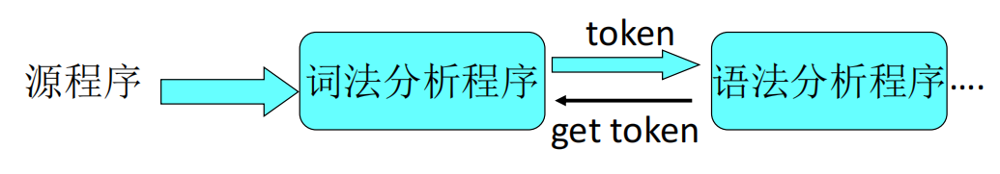
词法分析程序的主要任务及输出：
- 读源程序，产生用二元组表示的单词符号
- 滤掉空格，跳过注释、换行符
- 记录源程序的行号，以便出错处理程序准确定位源程序的错误
- 宏展开等…
2 正则表达式
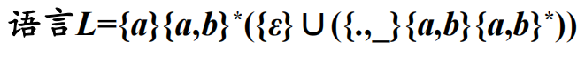
正则表达式（Regular Expression，RE）是一种用来描述正则语言的更紧凑的表示方法。
例如：
正则表达式可以由较小的正则表达式按照特定规则递归地构建。每个正则表达式 定义（表示）一个语言，记为。
这个语言也是根据 的子表达式所表示的语言递归定义的。
2.1 正则表达式的定义
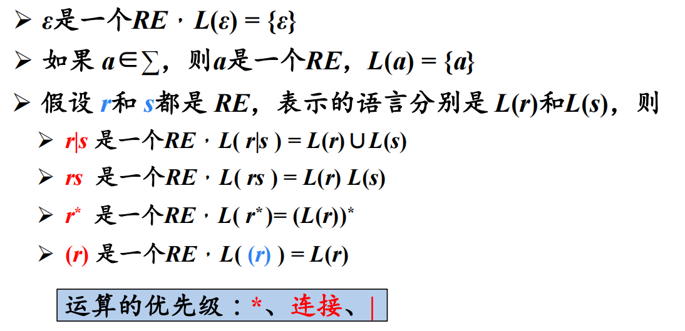
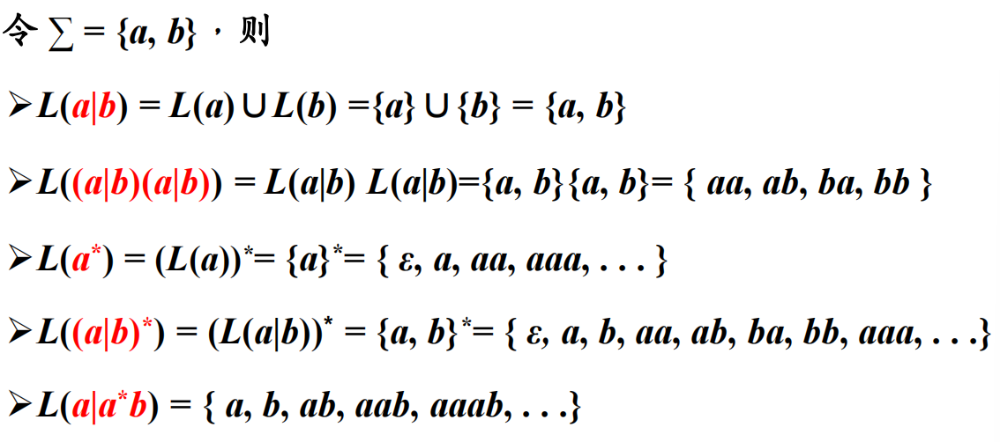
C语言无符号整数的 RE
十进制整数的RE：
八进制整数的RE：
十六进制整数的RE：
2.2 正则语言
可以用RE定义的语言叫做正则语言(regular language)或正则集合(regular set)。
2.2.1 RE的代数定律
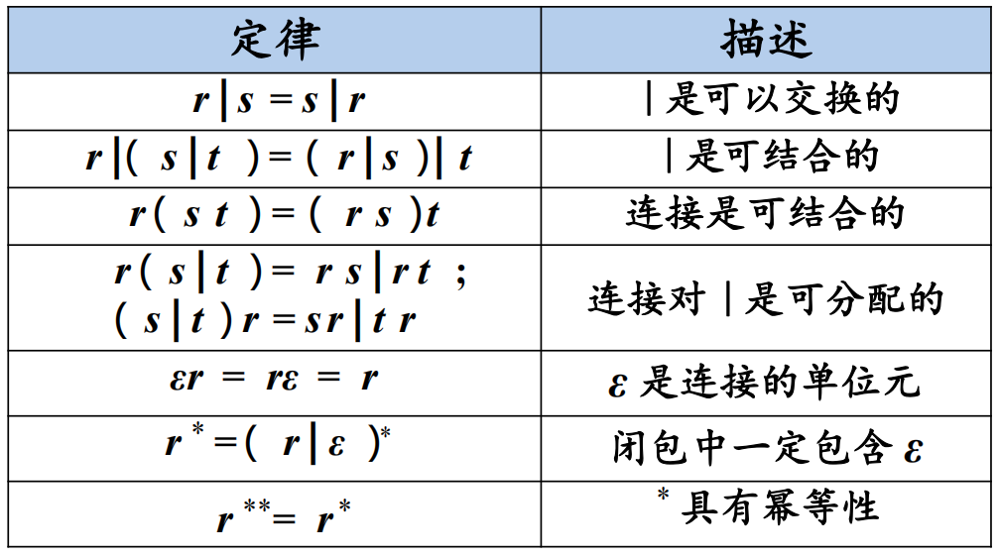
正则文法与正则表达式等价：
- 对任何正则文法 G，存在定义同一语言的正则表达式 r
- 对任何正则表达式 r，存在生成同一语言的正则文法 G
3 正则定义
正则定义（Regular Definition）是具有如下形式的定义序列：
其中：
- 每个 都是一个新符号，它们都不在字母表 Σ 中，而且各不相同
- 每个 是字母表上的正则表达式
给一些 RE 命名，并在之后的 RE 中像使用字母表中的符号一样使用这些名字。
例1：C语言中标识符的正则定义
- $ letter \_ \rightarrow A|B| \ldots |Z| a|b| \ldots |z| \_ $
- id \rightarrow letter \\_ \(letter \\_ |digit \)^*
例2：（整型或浮点型）无符号数的正则定义
4 有穷自动机
有穷自动机（Finite Automata，FA）由两位神经物理学家MeCuloch和Pitts于1948年首先提出，是对一类处理系统建立的数学模型。
这类系统具有一系列离散的输入输出信息和有穷数目的内部状态（状态：概括了对过去输入信息处理的状况）。
系统只需要根据当前所处的状态和当前面临的输入信息就可以决定系统的后继行为。每当系统处理了当前的输入后，系统的内部状态也将发生改变。
4.1 FA模型
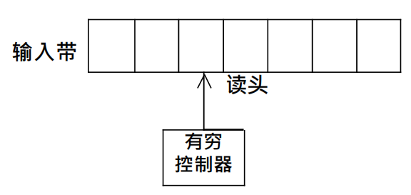
- 输入带（input tape）：用来存放输入符号串
- 读头（head）：从左向右逐个读取输入符号，不能修改（只读）、不能往返移动
- 有穷控制器（finite control）：具有有穷个状态数，根据当前的状态和当前输入符号控制转入下一状态
4.2 转换图
结点：FA的状态
- 初始状态（开始状态）：只有一个，由start箭头指向
- 终止状态（接收状态）：可以有多个，用双圈表示
带标记的有向边：如果对于输入，存在一个从状态到状态的转换，就在、之间画一条有向边，并标记上。
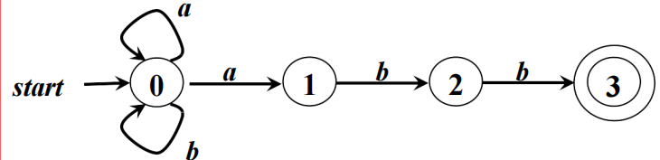
4.3 FA定义（接收）的语言
给定输入串，如果存在一个对应于串的从初始状态到某个终止状态的转换序列，则称符号串被该FA接收。
由一个有穷自动机M接收的所有符号串构成的集合称为是该FA定义（或接收）的语言，记为。
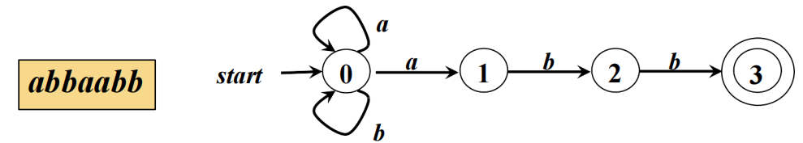
- =所有以
abb结尾的字母表上的符号串的集合
4.3.1 最长子串匹配原则
当输入串的多个前缀与一个或多个模式匹配时，总是选择最长的前缀进行匹配。
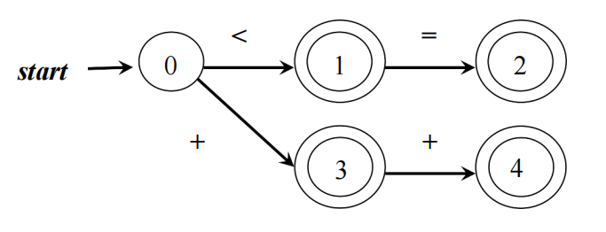
在到达某个终态之后，只要输入带上还有符号，DFA就继续前进，以便寻找尽可能长的匹配。
5 有穷自动机的分类
FA的分类：
- 确定的FA
(Deterministic finite automata, DFA) - 非确定的FA
(Nondeterministic finite automata, NFA)
5.1 确定的有穷自动机 (DFA)
- ：有穷状态集
- ：输入字母表，即输入符号集合。假设不是中的元素
- ：将映射到的转换函数。 ，，表示从状态出发，沿着标记为的边所能到达的状态
- ：开始状态 (或初始状态)，
- ：接收状态（或终止状态）集合，
5.1.1 一个DFA
可以用转换表表示DFA。
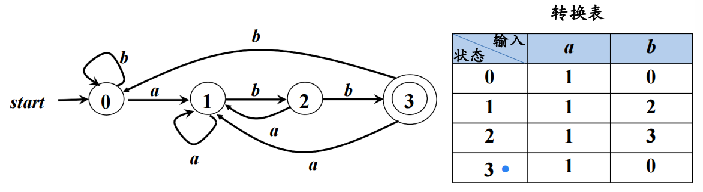
5.1.2 DFA的算法实现
输入：以文件结束符eof结尾的字符串x。DFA：D 的开始状态，接收状态集 F，转换函数move
输出：如果 D接收 x，则回答“yes”，否则回答“ no”
方法：将下述算法应用于输入串 x
1 | s = s0; |
- 函数
nextChar()返回输入串x的下一个符号 - 函数
move(s, c)表示从状态s出发，沿着标记为c的边所能到达的状态
5.2 非确定的有穷自动机(NFA)
- S：有穷状态集
- Σ：输入字母表，即输入符号集合。假设ε不是Σ中的元素
- δ：将S× Σ映射到的转换函数。 ，，表示从状态s出发，沿着标记为a的边所能到达的集合
- ：开始状态 (或初始状态)，
- F：接收状态（或终止状态）集合，
5.2.1 一个 NFA
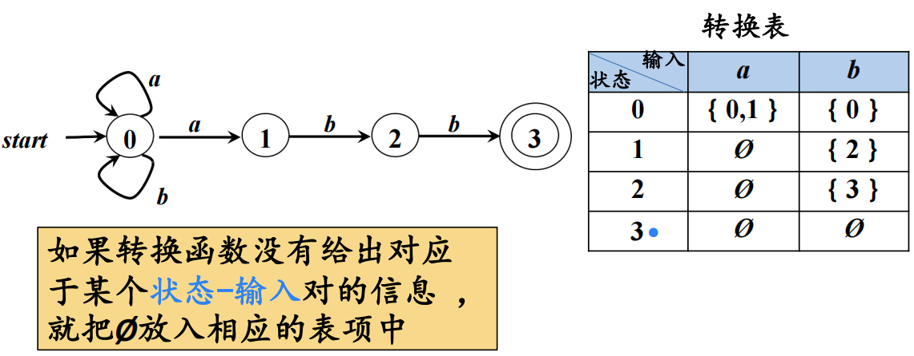
5.3 DFA和NFA的等价性
- 对任何
NFA：N ，存在识别同一语言的DFA：D - 对任何
DFA：D ，存在识别同一语言的NFA：N
例如：
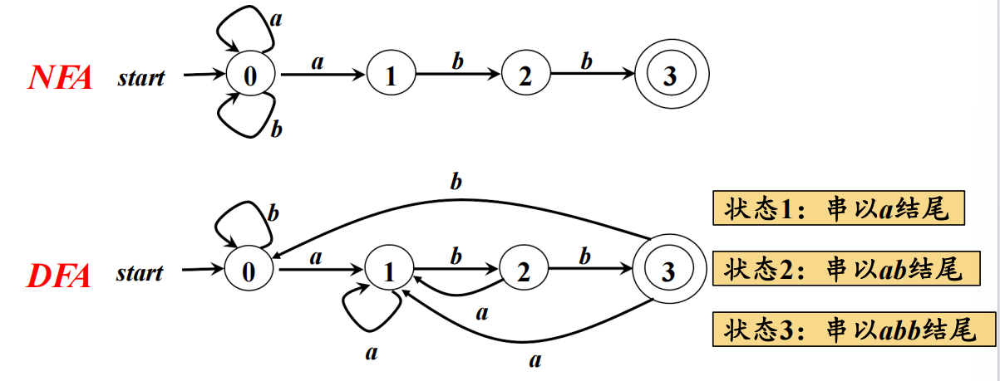
正则文法\ce{<->}正则表达式\ce{<->}FA
5.4 带有“ε-边”的NFA
- S：有穷状态集
- Σ：输入字母表，即输入符号集合。假设ε不是Σ中的元素
- δ：将映射到的转换函数。 ，，表示从状态s出发，沿着标记为a的边所能到达的集合
- ：开始状态 (或初始状态)，
- F：接收状态（或终止状态）集合，
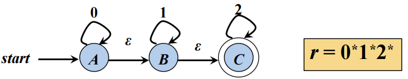
5.4.1 带有和不带 有“ε-边”的NFA 的等价性

6 从正则表达式到有穷自动机
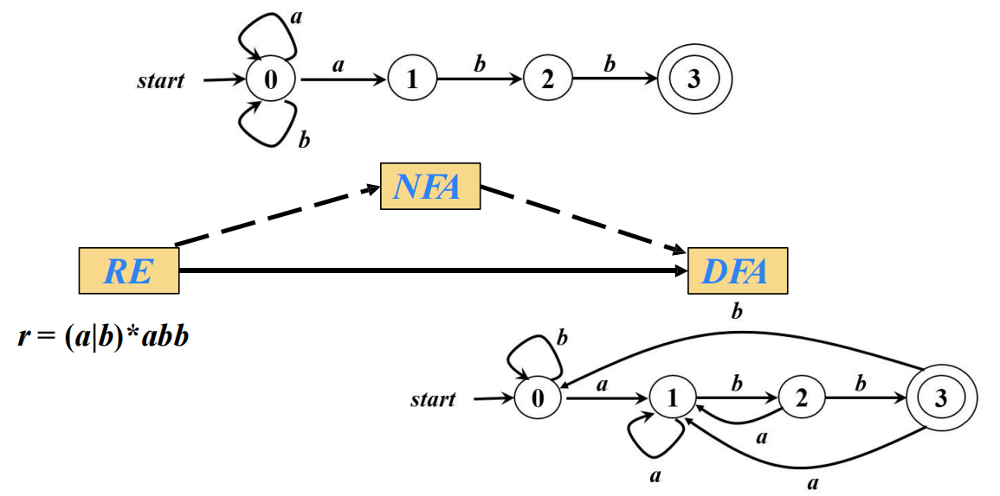
6.1 根据 RE 构造 NFA
- ε对应的
NFA
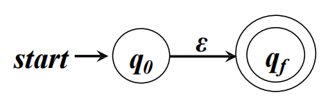
- 字母表Σ中符号a对应的
NFA
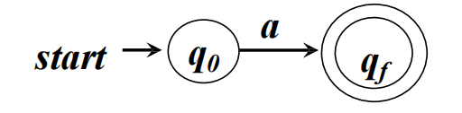
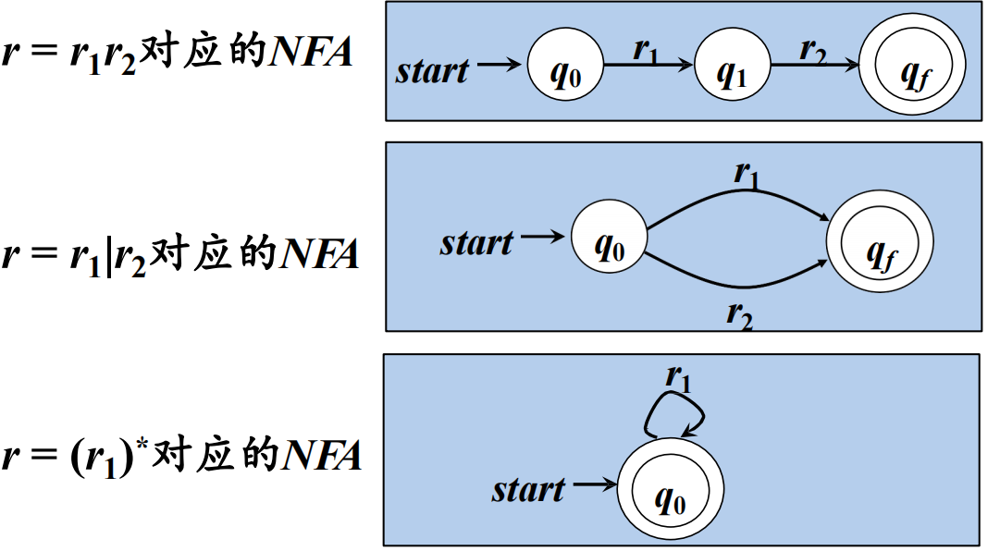
例：对应的
NFA
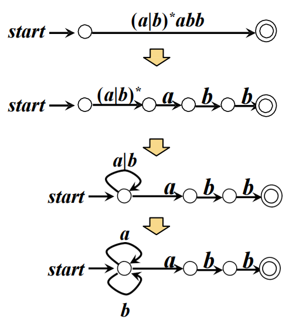
7 从NFA到DFA的转换
DFA是NFA的特例，对每个NFA：N一定存在一个DFA：M，使得。
将NFA转换成接受同样语言的DFA的方法——子集法，与某一NFA等价的DFA不唯一。
7.1 子集法
设NFA：，按如下办法构造一个DFA：，使得：
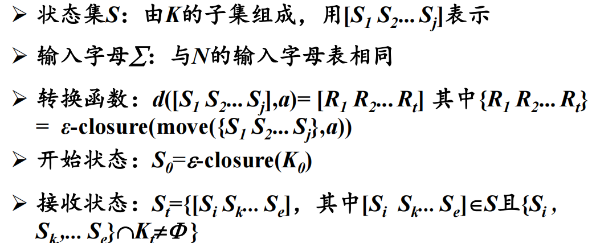
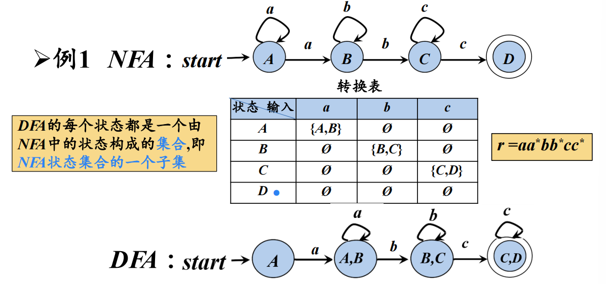
7.1.1 从带有 ε-边的 NFA到DFA的转换
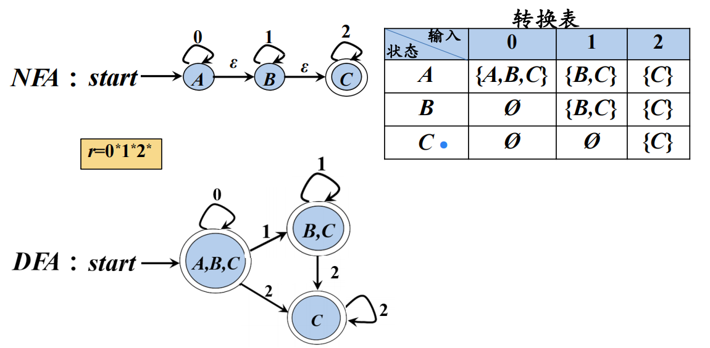
7.1.2 子集构造法（subset construction）
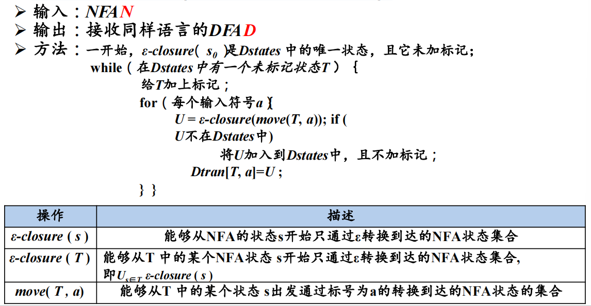
7.1.3 计算 ε-closure (T)
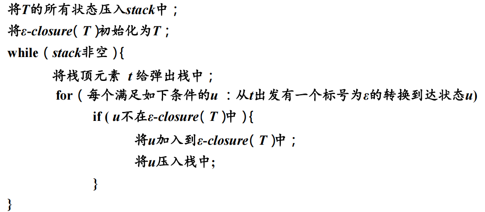
7.2 NFA 和DFA的区别
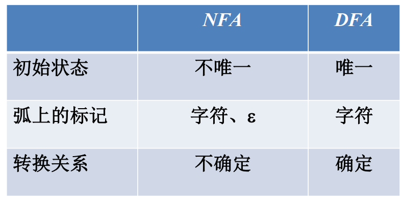
7.3 DFA的化简
通过消除无用状态和合并等价状态而转换成一个最小的与之等价的有穷自动机。
- 多余状态：从开始状态出发，任何输入串也不能到达的那个状态，或者从这个状态没有通路到达终态。
- 等价状态：
T1和T2同是终态或同是非终态，且T1出发对任意一个读入符号和从T2出发读入a到达的状态等价。
7.3.1 分割法
把一个DFA（不含多余状态）的状态分成一些不相交的子集，使得任何不同的两个子集的状态都是可区别的，而同一子集中的任何两个状态都是等价的。
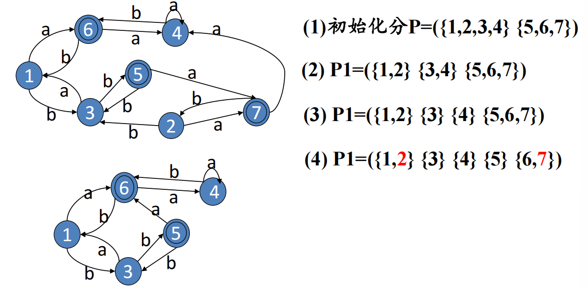
最小状态DFA的定义：
- 没有多余状态（死状态）
- 没有等价状态（不可区别）
接受L的最小状态有穷自动机不计同构是唯一的。
8 识别单词的DFA
识别标识符的
DFA
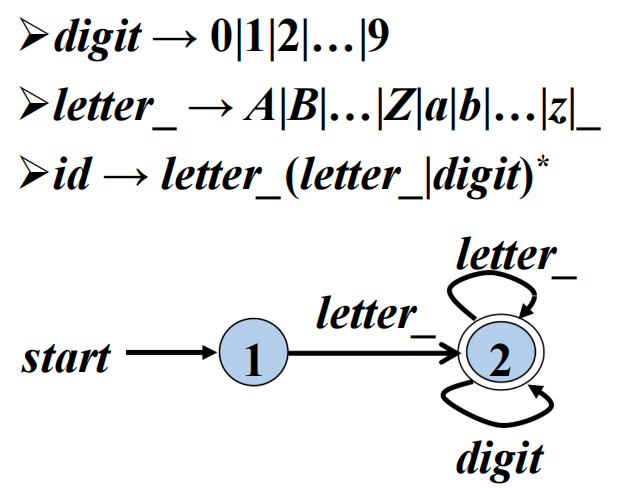
识别无符号数的
DFA
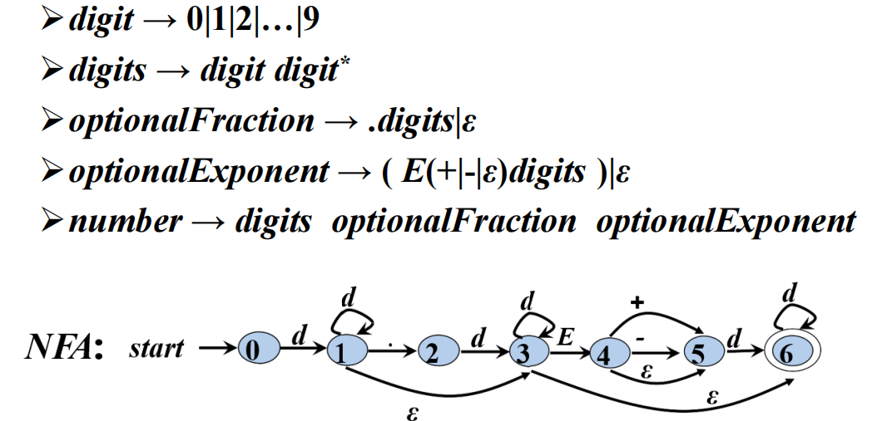
识别无符号数的
DFA
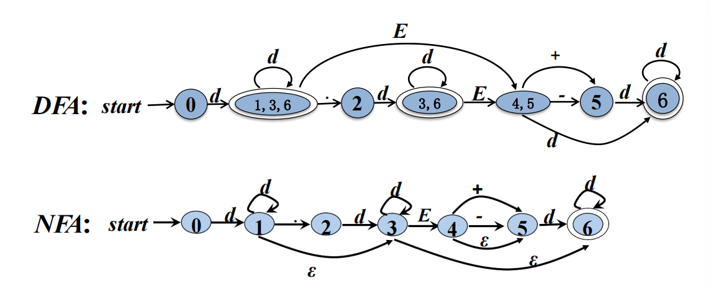
识别各进制无符号整数的
DFA
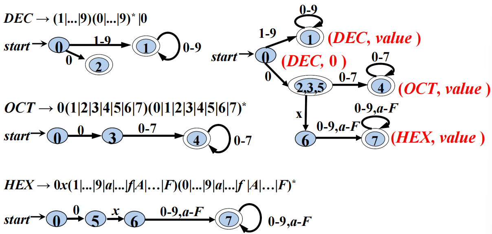
识别注释的
DFA
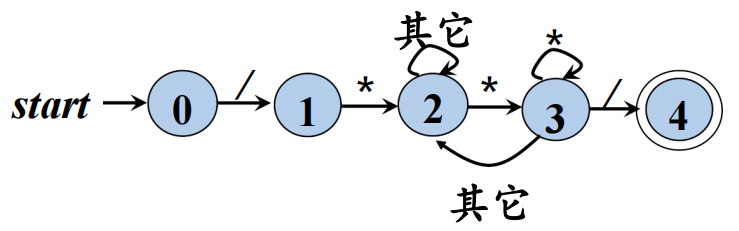
识别 Token的
DFA
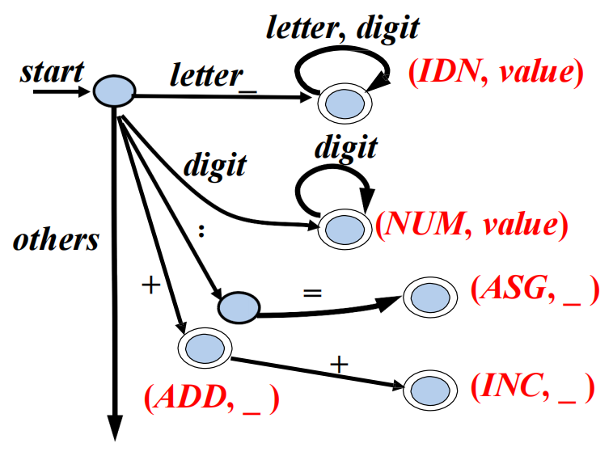
8.1 词法分析阶段的错误处理
词法分析阶段可检测错误的类型：
- 单词拼写错误
- 非法字符
如果当前状态与当前输入符号在转换表对应项中的信息为空，而当前状态又不是终止状态，则调用错误处理程序。
8.1.1 错误处理
查找已扫描字符串中最后一个对应于某终态的字符：
- 如果找到了，将该字符与其前面的字符识别成一个单词。然后将输入指针退回到该字符，扫描器重新回到初始状态，继续识别下一个单词
- 如果没找到，则确定出错，采用错误恢复策略
8.1.2 错误恢复策略
最简单的错误恢复策略：“恐慌模式（panic mode）”恢复。
从剩余的输入中不断删除字符，直到词法分析器能够在剩余输入的开头发现一个正确的字符为止。
 微信
微信 支付宝
支付宝